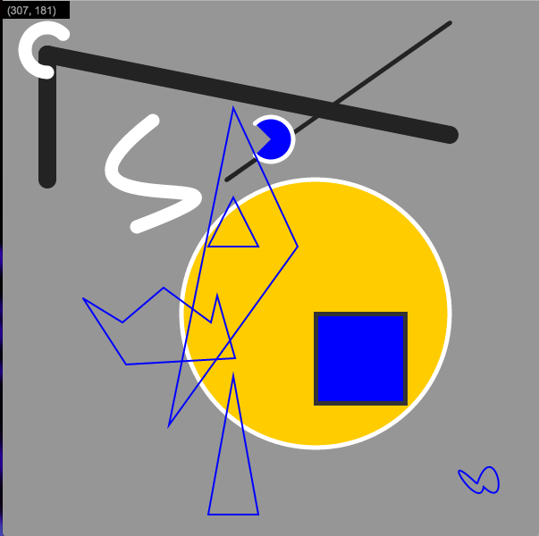
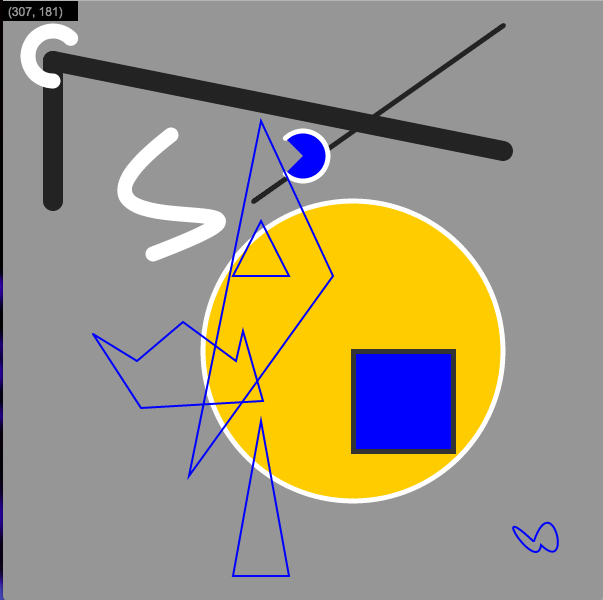
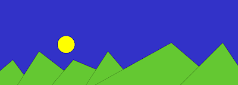
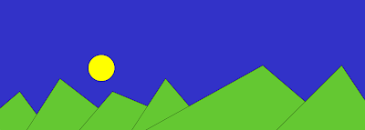
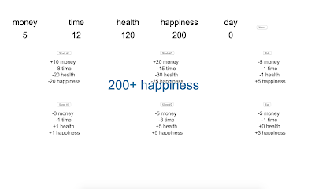
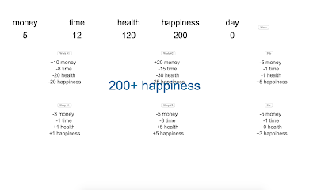
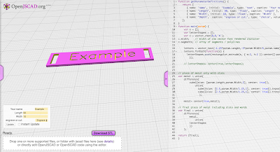
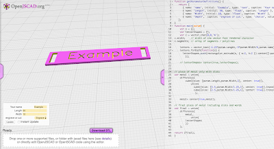

<title> lick wilmerding high School - technical arts :
computing</title>
</head>
<body>
<p id = "about">
<p id = "projects ">
</body>
computing 1: computational design (fall 2016)
computing 2: concepts and public purpose program (spring 2017)
<br>
i took two semester long courses focused on computer science in my sophomore year at lick-wilmerding high school. both computing 1 and computing 2 are semester-long techincal arts courses offered at lwhs. in these classes, we learned about the basics of computer science through scratch and p5 (javascript). we generated visual art, designed textiles, created animations, made custom software, and physically fabricated our designs on machines like the laser cutter, 3d printer, and cnc mill.
<br>
in both classes, we practiced collaboration; many of our large projects required that we work in group or pairs, preparing us for the culture at jobs where people work in teams to create awesome products. we also had to learn about ui/ux, communication with clients and overall planning.
</p>
computing 2: concepts and public purpose program (spring 2017)
<br>
i took two semester long courses focused on computer science in my sophomore year at lick-wilmerding high school. both computing 1 and computing 2 are semester-long techincal arts courses offered at lwhs. in these classes, we learned about the basics of computer science through scratch and p5 (javascript). we generated visual art, designed textiles, created animations, made custom software, and physically fabricated our designs on machines like the laser cutter, 3d printer, and cnc mill.
<br>
in both classes, we practiced collaboration; many of our large projects required that we work in group or pairs, preparing us for the culture at jobs where people work in teams to create awesome products. we also had to learn about ui/ux, communication with clients and overall planning.
<p id = "projects ">
here are the projects i worked on (click to see process, hover to see summary):
<ul>
</ul>
</p>
<ul>
<li>
p5 shapes practice project (no process link)
</li>
For the p5 shapes practice project, we practiced creating various shapes i p5 with varying sizes, colors, and line weight to get comfortable with using p5 and build our foundation of javascript 
For the p5 shapes practice project, we practiced creating various shapes i p5 with varying sizes, colors, and line weight to get comfortable with using p5 and build our foundation of javascript 
<li>p5 animation project (no process link)
</li>
for the p5 animation project, we began to experiment with conditionals, functions, and loops in p5. with the animation project, not only did we apply what we learned from previous assignments by creating shapes, but we also had to apply new ideas like conditionals. 
for the p5 animation project, we began to experiment with conditionals, functions, and loops in p5. with the animation project, not only did we apply what we learned from previous assignments by creating shapes, but we also had to apply new ideas like conditionals. 
<li>
explorable explanation project
</li>
for the explorable explanation project, we were prompted to design and program a digital learning app that enables a learner to explore a topic of our choice. we were required to include: objects, html / user interface elements, data/apis, and/or sound. i decided to make an rpg game that is about the life of a factory worker since we were learning about the industrialization in history class. 
for the explorable explanation project, we were prompted to design and program a digital learning app that enables a learner to explore a topic of our choice. we were required to include: objects, html / user interface elements, data/apis, and/or sound. i decided to make an rpg game that is about the life of a factory worker since we were learning about the industrialization in history class. 
<li>
make it parametric project
</li>
for the make it parametric project, we were required to work in groups to write a program that generates a parametric (customizable) 3d or 2d object using openJSCAD, a parametric modeling library for javascript. The project had to have 4 user-editable parameters. our group decided to make a customizable bracelet with a customizable metal plate. 
for the make it parametric project, we were required to work in groups to write a program that generates a parametric (customizable) 3d or 2d object using openJSCAD, a parametric modeling library for javascript. The project had to have 4 user-editable parameters. our group decided to make a customizable bracelet with a customizable metal plate. 
<li>
textile project
</li>
for the textile project, we used p5 javascript to write a program that generates a design to print on fabric, then use that fabric to make something. i created a peony pattern and used the design to make an apron
for the textile project, we used p5 javascript to write a program that generates a design to print on fabric, then use that fabric to make something. i created a peony pattern and used the design to make an apron